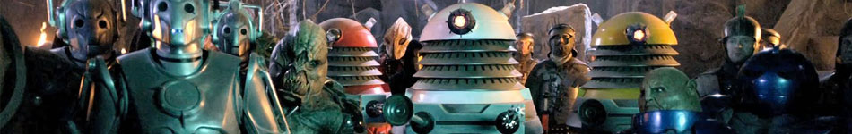

| Home The Doctors The Companions The Villains | |||||||
|  | |||||||
|
Lady Cassandra
The Ninth Doctor first encountered Cassandra (Lady Cassandra O'Brien.Δ17) in the episode "The End of the World". They, along with the rich and powerful of the universe, were on Platform One, a space station orbiting Earth five billion years in the future, which was set up to witness the final destruction of the planet by the expansion of the Sun. According to Cassandra, her parents were the last to be buried "in its soil". She had been born on Earth and lived on the edge of the "Los Angeles Crevasse". Cassandra referred to herself as being "a boy" during this time. This could imply she was transgender; however, it may also be possible that the term "boy" in the contemporary vernacular may have lost its gender significance and come to mean simply "child". Married several times, her life had been extended through a series of 708 plastic surgery operations, until she was nothing but a piece of skin stretched onto a frame, with eyes and a mouth, connected to a brain in a designer jar filled with a preserving solution below. The skin had to be constantly moisturised to keep it from drying out. As the rest of the human race had long since either interbred with other intelligent species or altered themselves to the point even they don't call themselves human anymore (references are made to 'New Humans', 'Proto-humans' and 'Digi-humans'), Cassandra considered herself the last "pure" human, and all others as 'mongrels'. Rose Tyler, who was quickly turned off by her arrogance, characterised her as a "bitchy trampoline" and referred to her as "Michael Jackson". |
||||||